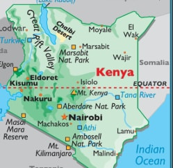

1. Define geography (2mks)
2. Define the term environment. (2mks)
3. Name two branches of geography. (2mks)
4. A part from planets name two other heavenly bodies. (2mks)
5. What is longitude. (2mks)
6. The diagram below shows the structure of the earth. Use it to answer questions a and b.
a) Name parts marked E, F and G. (3mks)
E
F
G
a) Name the minerals that make the crust. (2mks)
7. Give two dates in a year when the number of hours of daylight and darkness are equal . (2mks)
8. State two theories that have been put forward to explain the origin of the earth. (2mks)
9. The diagram below shows a set up of two thermometers use it to answer question (i) and (ii) .
i) Which instrument is represented by the two thermometers. (1mk)
ii) Name the parts labeled F and G (2mks)
10. The diagram below represents the structure of the atmosphere name parts labelled(3mks)
E
F
G
SECTION B 75 MARKS
11A) Identify three areas studied in human geography. (3mks)
b) Explain four reasons why geography is studied in Kenyan schools. (8mks)
c) Name four subjects that relate with geography. (4mks)
12a) State three effects of earths rotation on its own axis. (3mks)
b) Use a well labeled diagram to show how a lunar eclipse occurs. (6mks)
c) Explain three proofs that earth is spherical. (6mks)
13a) Define weather . (2mks)
b) Name five elements of weather. (5mks)
c) State three factors to consider when citing a weather station . (3mks)
d) Name three gases that make the earths atmosphere. (3mks)
e) State two reasons why weather forecasting is important. (2mks)
14a) Draw a map of Kenya on the map label the following
i) River Tana and Athi. (2mks)
ii) Mt Kenya (1mk)
iii) The equator (1mk)
c) Draw a diagram of the globe and label three important line of latitude. (3mks)
d) Draw a well labeled diagram of relief rainfall. (6mks)
15a) State three factors that affect amount of insolation reaching the earths surface.
(3mks)
b) Name three types of clouds’. (3mks)
c) Name three instruments that are kept in the stevensons screen. (3mks)
d) The data below shows temperature of Thika town recorded on 24/1/2014
Maximum Temperature 200c
Minimum Temperature 150
Calculate diurnal range of temperature for Thika town . (2mks)
ii) Calculate the mean daily temperature for Thika town . (2mks)
e) Name the elements of weather measured by the following instruments
i) Anemometer (1mk)
ii) Barometer (1mk)
Definition of geography
- Study of earth and home of man
- Destruction of distribution and interrelationships between various phenomena in relation to man. (2mks)
2.
Environment
-External conditions that surround a plant or an animal. (2mks)
3.
Branches of Geography (2mks)
- Physical geography
- Human geography
4.
Other heavenly bodies
- Asteroids
-Comments
Meteors and meteorites (2mks)
5.
Longitudes are imaginary lines that run across the globe from north pole to south pole. (2mks)
6a)
E – Gutenberg discontinuity
F Mantle
G Core (3mks)
7b)
Silicon and Magnesium (2mks)
b) 21st March
23rd September (2mks)
Nebula theory
Passing star theory
Creation theory (2mks)
9.
Thermo hygrometerpsychrometer (1mk)
ii) F Muslim (1mk)
ii) Water (1mk)
10.
E – stratosphere
F stropause
G thermosphere/ Imosphere (3mks)
11.
Areas studied in human geography
- Forestry
- Wildlife/Tourism
- Mining
- Population (3mks)
b) To explain the origin of the earth solar system and internal structure of the earth
- It helps learners to have skills of observing reading analysis and interpretation of maps charts diagrams and statistical data.
- Geography helps learners to understand and appreciate different environmental influence or different societies.
- Helps learners to manage time wisely especially study of field work.
- it creates awareness in management and conservation of the environment
-Helps learners in career development
- Learners are able to develop skills and knowledge for national development 4x2 = 12mks)
11. Agriculture
Chemistry
Effects of rotation
-It causes day and night
-It causes difference of 1 hour between meridians 150 part
-It caused deflections of winds and ocean currents
- It causes variations in the speed of our masses
- It causes rising and falling of ocean currents.
- Circumnavigation theories
- Disappearance and appearance
-Shadow of the earth across spherical on the moon during moons eclipse
-Standing on a tower the earth horizon appears circular
-Earth being a heavenly body must be circular like other heavenly bodies
-Satellites photographs show the earth is spherical 3x 2 = 6mks)
13a) Weather define
Weather is average atmospheric conditions of a place for a short period of time usually 24 hours (2mks)
b) Prepetition
- Humidity
- Air pressure
-Wind
Sunshine
c) Factors for citing weather station
- Open space allow free flow of air
- Not near objects to cause obstruction
- Relatively flat to avoid flooding
-Secure. (3mks)
d) Gases that make the atmosphere
- Nitrogen
- Oxygen
Water vapor
Importance of weather forecast
- It helps to determine farmers calendar
- Helps people to choose suitable clothing
- Helps pilots and captains in cur and water frames
- Helps to plan oporting activites
-It helps fishermen to determine their fishing habits (2mks)
14
a)

b)
c)
Labeling - Sea 1mk
Moist arising (1mk)
Clouds and rain (1mk)
Mountain barrier (1mk)
Leeward side (1mk)
Windward side (1mk)
a) Factors that influence racharion
- amount of insulation
Transparency of atmosphere
Position of the earth on its orbit which purchces different seasons
-Inclination an angle of surface on which the rays fall
-The area or nature of the surface on which the rays fall. (3mks)
b) Instrument kept in the stevenson screen
- Maximum thermometer
-Minimum thermometer
-Six thermometer
-Hygrometer (3mks)
d) i) Duranal range 200c – 150c = 50c (2mks)
ii) Mean daily temperature 20+5 = 25 = 12.50C
2 2
E) Anenometer - Wind speed ( 1mk)
Barometer - Air pressure (1mk)